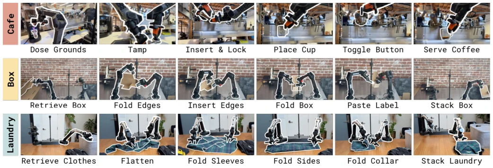
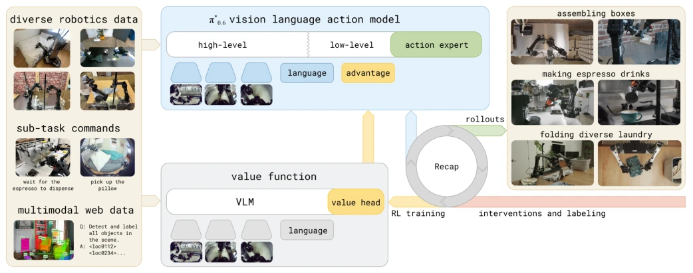
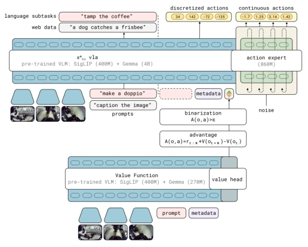
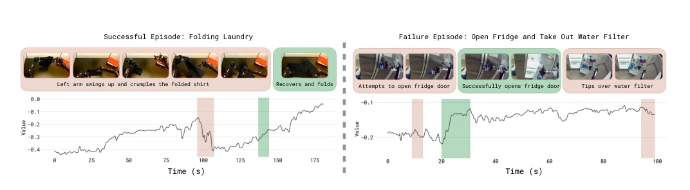
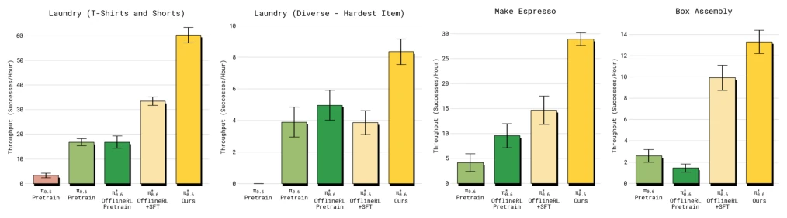
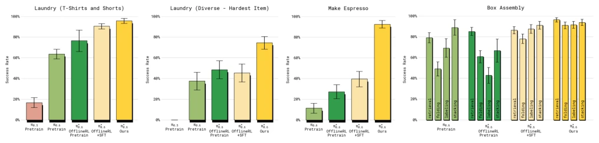
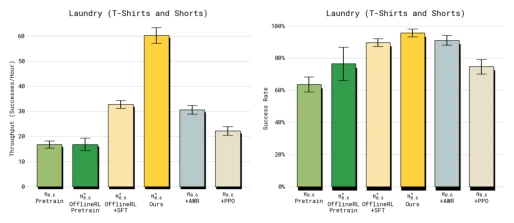
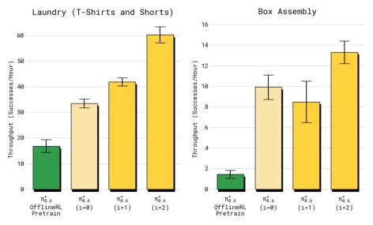
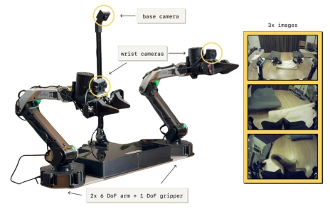
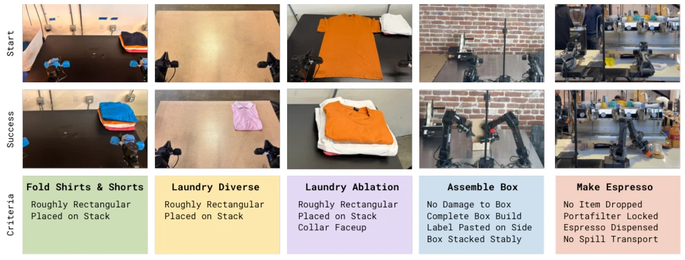

This paper attempts to address the difficulty of VLA deployment, claiming to learn from experience. To be honest, "learning from experience" sounds attractive, but essentially it is offline RL plus online correction. The π*0.6 model is indeed strong; on long-horizon tasks like folding clothes and making coffee, throughput doubled and failure rate halved, this data is quite impressive. But don't be misled by the title, it is not fully autonomous evolution, still relying on human expert intervention to correct errors (human interventions), otherwise the policy tends to collapse. Moreover, the reward signal is very sparse, relying entirely on task success/failure labels, lacking fine-grained feedback. For large-scale deployment, the scalability of this RL requiring human intervention is questionable, after all human experts cannot watch robots 24 hours a day. However, introducing Advantage Conditioning into VLA training is a smart move, avoiding the troubles of traditional PPO on diffusion models, leveraging the stability of Flow Matching. Overall, it is an engineering victory, but the theoretical "general RL recipe" is still a bit lacking, still far from true autonomous reinforcement learning.
Foundation models for embodied intelligence (such as VLA) can flexibly specify tasks via prompts, but mastering skills like humans requires repeated practice. Existing imitation learning (Imitation Learning) is prone to accumulating errors [7], and performance upper limits are limited by demonstration data, unable to adapt to new situations during deployment. Although existing work attempts to improve policies using online intervention [8-11], or combine RL for autonomous improvement [13-21], most are difficult to scale to large-scale VLA models. Directly applying policy gradient methods like PPO on diffusion or Flow Matching models is computationally complex and unstable [30-34], and difficult to handle heterogeneous data. In addition, existing methods often struggle to effectively fuse multiple data sources such as demonstrations, online collection, and expert intervention. This paper aims to solve how to design a scalable, stable RL training framework for large VLA models in the real world, enabling them to self-improve using reward feedback and human intervention, not just relying on static datasets, thereby improving robustness and speed.

Fig. 2: Some of the tasks learned by RECAP. π∗ 0.6 trained with RECAP can make espresso drinks, assemble cardboard boxes, and fold diverse and realistic laundry with a high success rate. Each task involves realistic variability – flattened unfolded boxes stick together and bend, making espresso drinks requires pouring liquids, and folding laundry requires generalization to a wide range of clothing items.
The core of the RECAP method is an iterative training framework. First, pretrain VLA (π*0.6) on a large-scale multi-task demonstration dataset, using offline RL and distributional value functions. After pretraining, fine-tune for specific tasks. Next, enter the online improvement loop: deploy model to collect autonomous trajectories, allowing experts to intervene and correct when failures occur. Then train a distributional value function (Distributional Value Function), predicting the steps required to complete the task (negative value), thereby evaluating state value. The most critical innovation lies in policy extraction: not directly using policy gradients, but binarizing the Advantage into an "Improvement Indicator" (It), conditioning it as additional text input into the VLA. This is similar to Classifier Free Guidance (CFG), allowing the model to learn action distributions of "improved" vs "unimproved" during training. In this way, the model can use all historical data (including suboptimal data) for supervised learning, avoiding the instability of traditional PPO in continuous action spaces. The entire process combines offline RL pretraining and online data collection, achieving continuous policy optimization through advantage conditioning, supporting Flow Matching action generation.

Fig. 1: RECAP enables training VLAs with reward feedback and interventions. Our system starts with a pre-trained VLA that incorporates advantage conditioning, allowing the model to learn effectively from real-world experience. For each task, we deploy the model and collect both autonomous rollouts and online human corrections. We then fine-tune the value function on this online data, improving its estimates of how actions influence performance. Fine-tuning and conditioning the VLA on these updated advantage estimates in turn improves policy behavior.

Fig. 3: Interaction between the π∗ 0.6 VLA and value function during RECAP training. The π∗ 0.6 VLA uses a pre-trained VLM backbone. Training follows the KI recipe [73], with next-token prediction on many data sources in pre-training, and an flow-matching action-expert with stop gradient. The VLA is conditioned on a binarized advantage indicator, obtained from a separate value function initialized from a pre-trained but smaller VLM model.

Fig. 4: Visualization of the value functions. We train a multi-task value function to predict the number of steps to success, normalized by maximum task length to (−1, 0), where 0 corresponds to successful completion. We visualize the value function output on a folding task that finished successfully (left), and an unsuccessful example of a manipulation task from the pre-training dataset (right). The red parts highlight a drop in value, and green parts highlight increases; images on top show the corresponding frames of the episode. The visualization shows that the VF correctly identifies mistakes in the episode, as well as the speed of progress.
Experiments were conducted on three complex tasks: diverse clothing folding, double espresso making, cardboard box assembly. Baselines include π0.5, π0.6, offline RL pretrain models and SFT versions, as well as policy extraction methods like AWR and PPO. Evaluation metrics are throughput (successes per hour) and success rate. Results show that π*0.6 applying RECAP doubled throughput on diverse clothing and coffee tasks, failure rate reduced by about 2 times. In the cardboard box assembly task, success rates for all subtasks were the highest. Ablation studies show that multi-round iterations can continuously improve performance, and advantage conditioning policy extraction is significantly better than AWR and PPO. In addition, this method can effectively remove specific failure modes (such as collar-down folding). Although success rate on simple tasks is already near saturation, throughput still improved, proving its effectiveness in efficiency optimization. The model can even run continuously for 13 hours making coffee, demonstrating extremely high robustness.

Fig. 7: Throughput. We show the number of successfully completed tasks per hour for laundry (simple and diverse), espresso making, and box assembly. Error bars show standard error. This metric measures both success and speed. In all cases, RECAP applied to π∗ 0.6 (Ours) leads to substantial improvements in throughput. RECAP has the highest impact on throughput for diverse laundry and espresso tasks, more than doubling successful completions per hour.

Fig. 8: Success rates. We show the absolute success rates with standard error. Each stage of RECAP improves performance across the tasks, with the challenging diverse laundry and espresso tasks seeing the largest gains success rate, corresponding to more than 2× reduction in failure rates. For the box assembly task we show the success rate for the different subtasks. RECAP leads to the most consistent (and highest) success across all subtasks.

Fig. 11: Comparison of different policy extraction methods. RECAP applied to π∗ 0.6 achieves by far the highest throughput for the laundry task compared to AWR and PPO.

Fig. 9: Improvement in throughput over multiple iterations. Both tasks improve significantly in throughput as we take more iterations of RECAP, with box assembling first dropping and then improving significantly.
其他图片Other Figures

Fig. 5: The robot setup used in our experiments. π∗ 0.6 is trained on data from many different robots in pre-training. For the iterative improvement experiments, we use a static bimanual system with two 6 DoF arms with parallel jaw grippers. The arms are controlled at 50 Hz with joint positions. Observations consist of joint and gripper positions, as well as images from three cameras: a base camera mounted between the arms, and a wrist-mounted camera on each arm. The setup can be mounted flexibly, e.g. on a table.

Fig. 6: Illustrations of the tasks used in our experiments. Tasks include three different laundry variants, assembling boxes, and making coffee drinks with an espresso machine.